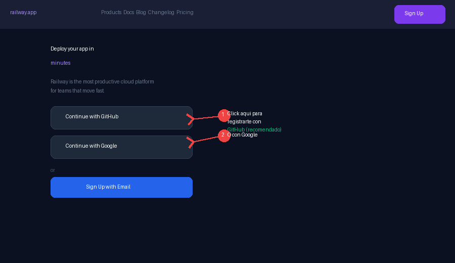
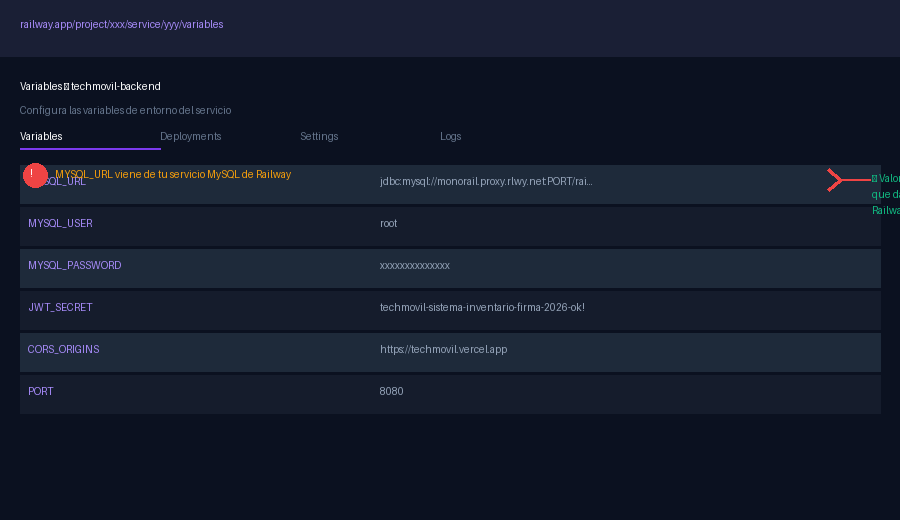
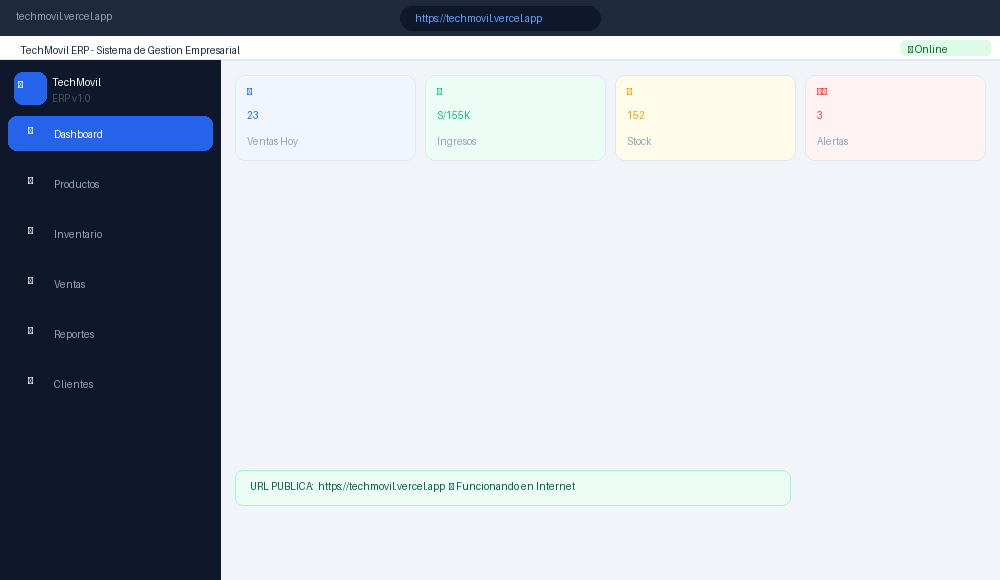
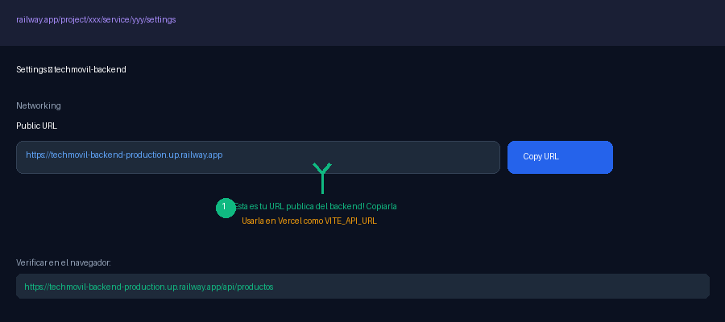
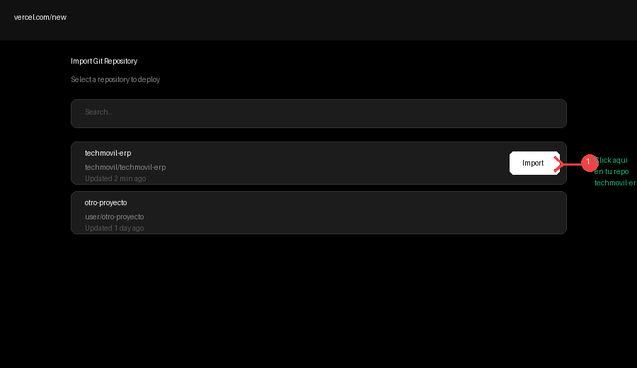
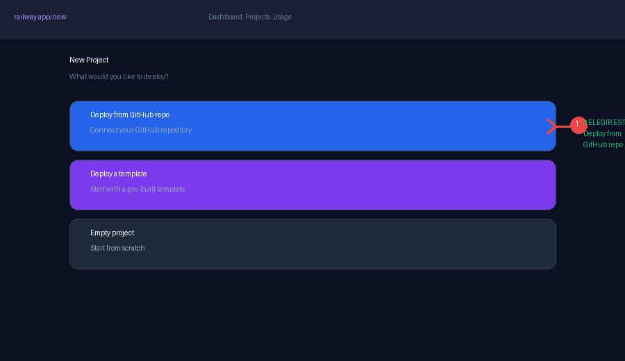
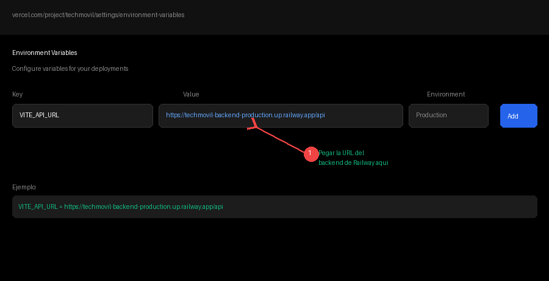

Guía de Deploy (Railway / Vercel)¶
TechMovil ERP — Guía de Despliegue a Internet — Entregable N.º 10. URL Pública Funcional usando Railway + Vercel (100% Gratis). Universidad Nacional del Altiplano, Juliaca, 2026.
Resultado final — URLs públicas¶
| Servicio | URL Pública | Estado |
|---|---|---|
| Frontend (App Web) | https://techmovil.vercel.app |
Vercel — Gratis ilimitado |
| Backend API REST | https://techmovil-backend.up.railway.app/api |
Railway — $5/mes crédito gratis |
| Base de Datos MySQL | railway.app (plugin MySQL) |
Railway MySQL — Gratis |
| Swagger / Docs API | https://techmovil-backend.up.railway.app/swagger-ui/index.html |
Incluido en backend |
Parte 1 — Plataformas utilizadas (100% gratuitas)¶
| Plataforma | Para qué sirve | Plan gratuito | URL |
|---|---|---|---|
| Railway.app | Backend Java + MySQL | $5 crédito/mes (suficiente) | https://railway.app |
| Vercel.com | Frontend React | Ilimitado (sin costo) | https://vercel.com |
| GitHub.com | Repositorio del código | Ilimitado (sin costo) | https://github.com |
Tiempo estimado: 20-30 minutos para tener todo en internet funcionando.
Parte 2 — Subir el código a GitHub (paso previo obligatorio)¶
Railway y Vercel se conectan directamente a tu repositorio de GitHub. Primero debes subir el código.
2.1 Crear cuenta en GitHub (si no tienes)¶
- Ir a
https://github.com. - Click en "Sign up".
- Registrarte con tu email universitario.
2.2 Crear repositorio en GitHub¶
- Después de registrarte, click en el botón verde "New" o "+".
- Nombre del repositorio:
techmovil-erp. - Descripción: "Sistema ERP para Gestión de Celulares - TechMovil".
- Seleccionar "Private" o "Public" según prefieras.
- NO marcar "Add a README" (ya lo tienes).
- Click en "Create repository".
2.3 Subir el código desde PowerShell¶
cd C:\TechMovil
git init
git add .
git commit -m "feat: TechMovil ERP v1.0.0 - Sistema completo"
git branch -M main
git remote add origin https://github.com/TU_USUARIO/techmovil-erp.git
git push -u origin main
Cuando pida usuario y contraseña, usar tu usuario de GitHub y un "Personal Access Token" (no la contraseña de GitHub). Para crear el token: GitHub → Settings → Developer Settings → Personal Access Tokens → Generate new token.
Parte 3 — Desplegar el backend en Railway¶
3.1 Crear cuenta en Railway¶

Figura 1: Pantalla de registro de Railway — usar "Continue with GitHub" (recomendado).- Ir a
https://railway.app. - Click en "Login" o "Get Started".
- IMPORTANTE: elegir "Continue with GitHub" para conectar automáticamente tu repo.
- Autorizar el acceso de Railway a tu GitHub.
3.2 Crear nuevo proyecto en Railway¶

Figura 2: Pantalla de nuevo proyecto — elegir "Deploy from GitHub repo".- En el Dashboard de Railway, click en "+ New Project".
- Elegir la opción "Deploy from GitHub repo".
- Buscar y seleccionar tu repositorio:
techmovil-erp. - Click en el repositorio → Railway empieza a detectar el proyecto.
- Seleccionar el directorio
1_BACKEND_CON_TESTScomo root del servicio.
3.3 Agregar base de datos MySQL a Railway¶
- En tu proyecto de Railway, click en "+ New".
- Seleccionar "Database" → "Add MySQL".
- Railway crea automáticamente una base de datos MySQL.
- Railway inyecta automáticamente las variables
MYSQL_URL,MYSQL_USER,MYSQL_PASSWORDen tu backend.
Sin configuración manual de MySQL
No necesitas configurar NADA en MySQL — Railway lo hace automáticamente. Las tablas se crean solas gracias a spring.jpa.hibernate.ddl-auto=update en application.properties.
3.4 Configurar variables de entorno en Railway¶

Figura 3: Panel de Variables de Entorno en Railway — agregar las variables del sistema.- En tu servicio del backend, ir a la pestaña "Variables".
- Railway ya inyectó automáticamente:
MYSQL_URL,MYSQL_USER,MYSQL_PASSWORD. - Agregar manualmente las siguientes variables adicionales:
| Variable | Valor | Descripción |
|---|---|---|
| JWT_SECRET | techmovil-sistema-inventario-firma-2026-ok! |
Clave firma JWT (NO cambiar) |
| CORS_ORIGINS | https://techmovil.vercel.app |
URL de tu frontend en Vercel |
| ADMIN_USER | admin |
Usuario administrador |
| ADMIN_PASS | admin123 |
Contraseña administrador |
Important
La variable CORS_ORIGINS la actualizarás con la URL real de Vercel cuando termines el paso siguiente. Por ahora puedes dejarla vacía o con un valor temporal.
3.5 Obtener la URL pública del backend¶

Figura 4: Settings > Networking — copiar la URL pública del backend de Railway.- En tu servicio del backend, ir a la pestaña "Settings".
- Sección "Networking" → "Public Networking" → click en "Generate Domain".
- Railway genera una URL como:
https://techmovil-backend-production.up.railway.app. - Copiar esta URL — la necesitarás para Vercel.
3.6 Verificar que el backend funciona¶
Abrir en el navegador:
https://TU-APP.up.railway.app/api/productos
Debe mostrar un JSON con la lista de productos. Si ves [] o una lista, está funcionando. Si ves un error 500, revisar los logs de Railway.
Parte 4 — Desplegar el frontend en Vercel¶
4.1 Crear cuenta en Vercel¶

Figura 5: Importar repositorio en Vercel — buscar y seleccionar techmovil-erp.- Ir a
https://vercel.com. - Click en "Sign Up" → usar "Continue with GitHub".
- Autorizar Vercel para acceder a tus repositorios de GitHub.
4.2 Importar el proyecto en Vercel¶
- Click en "Add New Project" → "Import Git Repository".
- Buscar y seleccionar:
techmovil-erp. - En "Root Directory" hacer click en "Edit" y seleccionar:
2_FRONTEND. - Framework Preset: Vercel detectará automáticamente "Vite".
- Build Command:
npm run build(ya está configurado). - Output Directory:
dist(ya está configurado).
4.3 Configurar la variable de entorno en Vercel¶

Figura 6: Variables de Entorno en Vercel — configurar VITE_API_URL con la URL de Railway.Antes de hacer click en "Deploy", buscar la sección "Environment Variables" y agregar:
| Variable | Valor (poner tu URL real de Railway) |
|---|---|
| VITE_API_URL | https://TU-APP-railway.up.railway.app/api |
- Click en "Deploy".
- Vercel compila el frontend automáticamente (tarda 1-2 minutos).
- Al terminar, te da una URL como:
https://techmovil.vercel.app.
4.4 Verificar el deploy completo¶

Figura 7: Aplicación TechMovil ERP funcionando en internet con URL pública — Entregable #10 completado.- Abrir la URL de Vercel en el navegador.
- Ingresar con
admin/1234. - Verificar que el Dashboard carga con datos.
- Ir a Productos y verificar que la lista carga desde el backend en Railway.
Si el login funciona y los productos cargan, el deploy completo está funcionando. La aplicación está en internet.
Parte 5 — Actualizar CORS en Railway¶
Una vez que tienes la URL de Vercel (ej. https://techmovil-abc123.vercel.app), debes actualizar la variable CORS_ORIGINS en Railway:
- Ir a tu proyecto en Railway → Backend service → Variables.
- Buscar la variable
CORS_ORIGINS. - Cambiar su valor por la URL de tu frontend en Vercel:
CORS_ORIGINS = https://techmovil-abc123.vercel.app
- Railway redespliega automáticamente el backend con el nuevo CORS.
- Esperar 1-2 minutos y probar de nuevo.
Si tienes un dominio personalizado (ej. techmovil.com), agregar también ese origen:
CORS_ORIGINS = https://techmovil.vercel.app,https://www.techmovil.com
Parte 6 — Resumen final de URLs¶
| Servicio | URL Pública | Credenciales |
|---|---|---|
| Frontend (App Principal) | https://techmovil.vercel.app |
admin / 1234 |
| Backend API REST | https://xxx.up.railway.app/api |
admin / admin123 |
| Swagger UI | https://xxx.up.railway.app/swagger-ui/index.html |
Sin credenciales |
| API Productos (JSON) | https://xxx.up.railway.app/api/productos |
Sin autenticación |
| GitHub Repositorio | https://github.com/TU_USUARIO/techmovil-erp |
Público |
Solución de problemas en deploy¶
| Problema | Causa | Solución |
|---|---|---|
| Build FAILED en Railway | Error de compilación Java | Verificar que el pom.xml usa Java 17 |
| Cannot connect to database | Variables MYSQL_* no configuradas |
Verificar que Railway agregó las variables de MySQL |
| CORS error en el frontend | CORS_ORIGINS no incluye tu URL de Vercel |
Actualizar CORS_ORIGINS en Railway con la URL de Vercel |
| Build error en Vercel | Root Directory incorrecto | Verificar que Root Directory = 2_FRONTEND en Vercel |
| API no responde (timeout) | Plan gratuito de Railway durmió el servicio | La primera petición tarda 30-60 seg en despertar. Normal en plan gratis. |
| Productos no cargan (frontend) | VITE_API_URL apunta a localhost |
Verificar que VITE_API_URL en Vercel apunta a Railway (no localhost) |
Comandos de diagnóstico:
# Ver logs del backend en Railway:
railway logs --tail (desde PowerShell con Railway CLI)
# O en el Dashboard de Railway:
Proyecto → Servicio Backend → Pestaña "Logs"